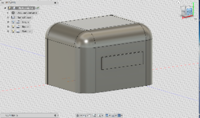
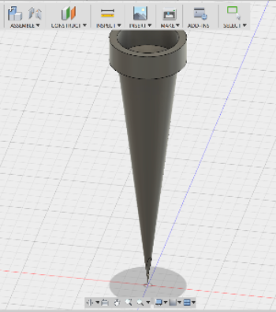

Face scan and the pedestal
The face scan might be the most interesting project we would do.
Scanning the relief of a face using a gaming software getting it to look right without any holes seemed hard.
There were times when the software would not recognise parts of ur face and thus create holes.
To fill these holes we had to learn how to use a mesh oriented software that is meshmixer.
The project was fun, but I lost my copy of my face in the 3d version and hence could not print it.
But below is there is an attached copy of the pedestal 1 made for my face.

The drip irrigation project
The project was to create a small scale drip irrigator that could drip the optimum amout of water from a water bottle.
The real life interaction with objects was required.We were supposed to find out the diameter of the head of the bottle.
so that we make the drip irrigator top of the right size.
The irrigator was supposed to be snug with the water bottle..
With the holes small in diameter so that the water does not easily seep through them.The project worked and were able to add this wonderful expercience to this class

The 3D object
This was the longest project for me because I had a lot of ideas and was not always able to make them.
I tried making a Pikachu but I was not able to finish form to print it.I tried making a unicorn again an unsuccesful event.
Then I ended up making a cupcake, not the best attemp but I learn sometimes you need to be thoughful about the time limitations also
as designing without any special specifications and can be time consuming.